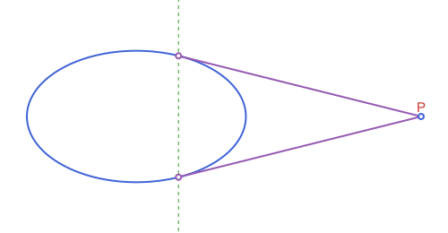
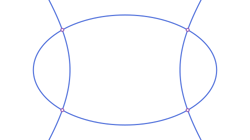
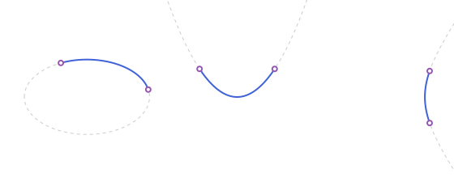
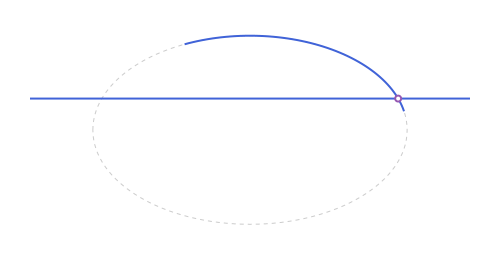
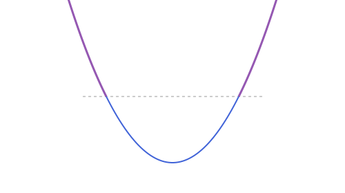
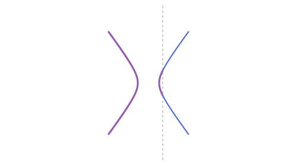
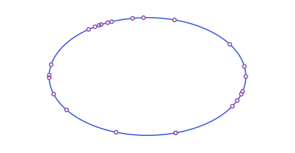

Conics: Tangents, Duality & Arcs
The ellipse, parabola and hyperbola from Conics: Ellipse, Parabola & Hyperbola:
using Apollonius
e = APEllipse2(APPoint(0.0, 0.0), 5.0, 3.0)
focus = APPoint(0.0, 1.0)
directrix = APLine(APPoint(-5.0, -1.0), APPoint(5.0, -1.0))
par = APParabola2(focus, directrix)
h = APHyperbola2(APPoint(0.0, 0.0), 3.0, 4.0)Points, tangents and duality
The following table applies to all three types (write conic for whichever of APEllipse2, APParabola2 or APHyperbola2 you're using):
| Function | Meaning |
|---|---|
point_on_conic(conic, param) | a point on the curve at the given parameter |
is_on_conic(p, conic) | is p exactly on the curve? |
intersection(l, conic) | 0, 1 or 2 points where an APLine/APSegment/APRay crosses the curve |
polar_line(conic, p) | the polar line of p (see below) |
tangent_points(conic, p) | the point(s) of tangency of the line(s) from p |
tangent_lines(conic, p) | the tangent line(s) themselves |
intersection reduces APSegment/APRay to the underlying APLine case and then keeps only the points that actually fall on the segment/ray, so a segment that stops short of the curve correctly returns nothing, and a ray only ever reports points ahead of its origin:
intersection(APSegment(APPoint(-10.0, 0.0), APPoint(0.0, 0.0)), e) # reaches the near vertex
intersection(APRay(APPoint(0.0, 0.0), APPoint(1.0, 0.0)), e) # the far vertex, not the near one1-element Vector{APPoint{2, Float64}}:
[4.999999999999999, 0.0]The polar line of a point p with respect to a conic is the projective-duality construction that makes all of tangent_points and tangent_lines work uniformly, for every conic (including APCircle2, see Circles: Inversion):
- When
pis outside the curve, its polar is the chord joining the two points where the tangent lines fromptouch the curve, sotangent_pointsis implemented as simplyintersection(polar_line(conic, p), conic). - When
pis on the curve, its polar line degenerates to the tangent line atpitself, which is exactly whytangent_linesspecial-cases that situation, rather than returning the degenerateAPLine(p, p)a naive "joinpto its own tangent point" would give. polar_linereturnsnothingat the one truly degenerate input:pbeing the ellipse/hyperbola's center (an ellipse's or hyperbola's polar of its own center would be the line at infinity), or the parabola's focus sitting on its own directrix (a degenerate parabola, not a real curve at all).
p = APPoint(13.0, 0.0)
tangent_points(e, p)
tangent_lines(e, p)2-element Vector{APLine{2, Float64}}:
APLine([13.0, 0.0] -> [1.923076923076923, 2.7692307692307687])
APLine([13.0, 0.0] -> [1.923076923076923, -2.7692307692307687])
For an APHyperbola2 specifically, note that being far from the curve doesn't guarantee real tangents (or the lack of them) the way it does for an ellipse. It depends on which side of which branch p sits on; tangent_points/tangent_lines still return an empty vector rather than erroring when there are none.
Intersecting two conics
intersection also works between two full conics of any kind, straight or mixed (an ellipse against a hyperbola, two different ellipses, a circle against a parabola, ...), returning up to 4 real points:
intersection(e, h)4-element Vector{APPoint{2, Float64}}:
[3.4197056444065206, -2.1886116124203276]
[-3.4197056444065206, -2.1886116124203276]
[3.4197056444065206, 2.1886116124203276]
[-3.4197056444065206, 2.1886116124203276]
Two circles are the one pairing with its own dedicated, exact method (finding two circles' intersection reduces to a single quadratic); every other pairing goes through a general elimination method instead, since two conics can meet in up to 4 points, one degree too many for that shortcut. Both give a Vector{APPoint{2,Float64}}, so nothing about calling intersection changes based on which two types you hand it.
The tangent and the normal at a point
tangent_line(curve, p) is the tangent to a circle, an ellipse, a hyperbola, a parabola or an arc of any of them at its point p, and normal_line the perpendicular to it through p. The point must be on the curve (or on the arc), or an ArgumentError is raised. They are the same tangent as polar_line gives for a point of the conic, in one function for every curve:
ec = APEllipse2(APPoint(0.0, 0.0), 5.0, 3.0)
pc = point_on(ec, 1.0)
tangent_line(ec, pc) ≈ polar_line(ec, pc), is_on_line(pc, normal_line(ec, pc))(true, true)Arcs of a conic
APEllipticArc2, APParabolicArc2 and APHyperbolicArc2 are the finite-arc analogues of APCircularArc2 (see Circles: Arcs) for these three conics: each holds the underlying conic plus two points p1/p2 on it, and point_on/arc_length work on all four arc types uniformly:
earc = APEllipticArc2(e, point_on(e, 0.2), point_on(e, 2.0))
point_on(earc, 0.0) ≈ earc.p1, point_on(earc, 1.0) ≈ earc.p2(true, true)parc = APParabolicArc2(par, point_on(par, -3.0), point_on(par, 3.0))
arc_length(parc) > distance(parc.p1, parc.p2) # the arc is always longer than its chordtrueharc = APHyperbolicArc2(h, point_on(h, -0.5), point_on(h, 0.5))
harc isa APHyperbolicArc2trueEach also builds directly from the underlying conic's own raw parameters, without an APEllipse2/APHyperbola2/APParabola2 in hand first (the same idea as APCircularArc2(center, r, p1, p2) in Circles: Arcs):
APEllipticArc2(e.center, e.a, e.b, earc.p1, earc.p2; angle=e.angle) == earctrue
Unlike a circular or elliptic arc (where "the arc from p1 to p2" means one of two complementary, closed possibilities), a single hyperbola branch or a parabola is an open curve, so two points on it always determine exactly one unambiguous arc; there's no sweep direction to pick. See Drawing with Luxor.jl for how all four arc types render (a true Cairo primitive for the circular case, a sampled polyline for the other three, since Luxor has no native primitive for them).
All four arc types (this trio plus APCircularArc2) support reverse, swapping p1/p2. For the closed conics (APCircularArc2/APEllipticArc2), this gives the complementary arc: a genuinely different piece of the curve, "the rest of the way around" (same gotcha as reverse(::APAngle2): useful when the arc was built from points already in a mirrored coordinate space, e.g. after @prepare_to_picture's default flip=true). For the open ones (APParabolicArc2/APHyperbolicArc2), there's no such ambiguity: reverse just re-parametrizes the same arc in the opposite direction (point_on(arc, t) becomes point_on(reverse(arc), 1 - t)):
reverse(reverse(parc)) == parc, point_on(reverse(parc), 0.0) ≈ parc.p2(true, true)Intersecting an arc
intersection works on an arc the same way it works on the full conic: against APLine/APSegment/APRay, it intersects the underlying curve and keeps only the points that also fall within the arc's own sweep (the same idea as in(p, arc), used internally):
l = APLine(APPoint(-10.0, 1.0), APPoint(10.0, 1.0))
intersection(l, earc) # only one of the two ellipse crossings is on this short arc1-element Vector{APPoint{2, Float64}}:
[4.714045207910317, 1.0]
An arc also intersects a full conic of any kind, not just the one it's cut from, and another arc of any kind, the same way: intersect the two underlying full conics, then keep only the points within every arc's own sweep.
circ = APCircle2(APPoint(0.0, 0.0), 5.0)
carc = APCircularArc2(circ, APPoint(5.0, 0.0), APPoint(0.0, 5.0))
intersection(APCircle2(APPoint(5.0, 5.0), 5.0), carc) # circle against a circular arc2-element Vector{APPoint{2, Float64}}:
[5.0, 4.440892098500626e-16]
[4.440892098500626e-16, 5.0]intersection(APCircle2(APPoint(5.0, 5.0), 5.0), earc) # same idea, an elliptic arc this time1-element Vector{APPoint{2, Float64}}:
[0.4221134028813571, 2.9892900995117437]Clipping against a region
intersection(region, curve) for region an APAngle2/ APHalfPlane2/APStrip2 and curve a full APParabola2/APHyperbola2 or one of their arcs is the part of curve inside region, not boundary-crossing points (see Unbounded Regions: Half-Planes, Strips & Angles, which covers the same idea for a circle/ellipse). It's always a Vector here, though, unlike the closed conics: curve is itself unbounded (open), so even a single half-plane can split it into two disjoint surviving pieces:
l = APLine(APPoint(-5.0, 4.0), APPoint(5.0, 4.0))
hp = APHalfPlane2(l, APPoint(0.0, 10.0))
intersection(hp, par)2-element Vector{Any}:
APParabolicRay2(APParabola2(focus=[0.0, 1.0], directrix=APLine([-5.0, -1.0] -> [5.0, -1.0])), [4.0, 4.0], dir=-1)
APParabolicRay2(APParabola2(focus=[0.0, 1.0], directrix=APLine([-5.0, -1.0] -> [5.0, -1.0])), [-4.0, 4.0], dir=1)
Whichever pieces survive come back in the tightest fitting type: an APParabolicRay2/APHyperbolicRay2 when one end is still unbounded (what the example above gives, twice), the existing APParabolicArc2/APHyperbolicArc2 when both ends are finite, or curve itself unchanged when the whole thing survives. APParabolicRay2/APHyperbolicRay2 are the APRay of these two open conics: a starting point plus a direction to extend toward, this time along the curve's own parameter rather than a straight line. They also build directly, without going through intersection first:
ray = APParabolicRay2(par, point_on(par, 2.0), 1) # from s = 2, extending toward s -> +Inf
point_on(ray, 3.0), point_on(ray, 0.0) ≈ point_on(par, 2.0)([-5.0, 6.25], true)distance(APPoint(0.0, 0.0), ray) # the parabola's own vertex isn't on this ray, so its endpoint is closer2.23606797749979A hyperbola's two branches are independent open curves, so clipping one against a region can leave a whole branch untouched while the other is cut down or excluded entirely; APHyperbolaBranch2 is what represents "one whole branch" on its own, something APHyperbola2 itself (both branches together) can't:
hp2 = APHalfPlane2(APLine(APPoint(4.0, -20.0), APPoint(4.0, 20.0)), APPoint(-10.0, 0.0))
intersection(hp2, h)2-element Vector{Any}:
APHyperbolicArc2{Float64}(APHyperbola2(center=[0.0, 0.0], a=3.0, b=4.0, angle=0.0), [3.999999999407602, -3.5276684135586245], [3.999999999407602, 3.5276684135586245])
APHyperbolaBranch2(APHyperbola2(center=[0.0, 0.0], a=3.0, b=4.0, angle=0.0), branch=-1)
A half-plane that instead crosses both branches (a horizontal line meets each branch of this h exactly once, transversally, since y is monotonic along either branch) leaves an APHyperbolicRay2 from each:
hp3 = APHalfPlane2(APLine(APPoint(-20.0, 2.0), APPoint(20.0, 2.0)), APPoint(0.0, 10.0))
intersection(hp3, h)2-element Vector{Any}:
APHyperbolicRay2(APHyperbola2(center=[0.0, 0.0], a=3.0, b=4.0, angle=0.0), [3.35410196616028, 1.9999999997334452], branch=1, dir=1)
APHyperbolicRay2(APHyperbola2(center=[0.0, 0.0], a=3.0, b=4.0, angle=0.0), [-3.35410196616028, 1.9999999997334452], branch=-1, dir=1)in/distance/rotate/homothety/translate/reflection/ APAffineMap all work on the three new types the same way they do on every other curve in the package; see Drawing with Luxor.jl for how they render (a sampled polyline, the same as the full conics and their arcs).
An APStrip2/convex APAngle2 chains two such half-plane clips together; a reflex APAngle2 can still add more disjoint pieces, the same way it does for a line, segment, ray, circle or ellipse.
Random points
rand draws a random point on an APEllipse2 or any of these three arc types (see Points, Lines & Rays: Special Points & Curves for the general story across every shape in the package). Unlike a circle or circular arc, this is uniform in the curve's own parameter, not in arc length: exact arc-length sampling would need elliptic integrals for these three, so points cluster slightly more densely near the flatter parts of the curve (near an ellipse's minor axis, for instance):
is_on_ellipse(rand(e), e) # true, but not uniformly spread along the perimeter
in(rand(earc), earc), in(rand(parc), parc), in(rand(harc), harc)(true, true, true)